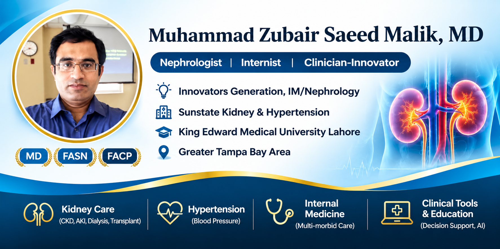

Chronic Kidney Disease Care
CKD staging, risk reduction, anemia management, and clear plans to help protect the kidney function you have.
Ask about CKD careMaybe a lab result worried you. Maybe your doctor mentioned your kidneys and you left with more questions than answers. Whatever brought you here, you're in the right place. We make kidney care clear, personal, and easy to follow.

Dr. Zubair Malik — MD, FASN, FACP • Nephrology & Internal MedicineSunstate Kidney & Hypertension is a specialty practice focused on nephrology — the branch of medicine dedicated to kidney health. Our physicians and nurse practitioners care for chronic kidney disease, high blood pressure, diabetic kidney disease, electrolyte imbalances, dialysis, and transplant follow-up.
We work directly with your primary care doctor and other specialists so nothing falls through the cracks. Whether this is your first consultation or part of long-term monitoring, you'll always know what's happening and what comes next.
From a first consultation to ongoing support, our team is here to care for your kidneys and keep you in the loop at every step.
CKD staging, risk reduction, anemia management, and clear plans to help protect the kidney function you have.
Ask about CKD careBlood pressure plans built around your numbers, your medications, and your long-term kidney and heart health.
Ask about blood pressureStart-up planning, dialysis access guidance, and ongoing monitoring for hemodialysis and peritoneal dialysis.
Ask about dialysisTransplant evaluation support and long-term follow-up to keep your transplant and your overall health on track.
Ask about transplant careKidney imaging to look for structural causes, monitor changes, and guide the next step in your evaluation.
Ask about imagingLab tracking, potassium and mineral balance, and anemia treatment tailored to your kidney function.
Ask about labsPractical food guidance for kidney health and blood pressure — without giving up the meals you enjoy.
Ask about nutritionStraight answers in plain language, so you can take an active role in your care and feel confident about next steps.
Ask our AINot sure where to start? Our AI assistant can explain kidney and blood pressure topics in plain language and help you prepare for your appointment.
Educational only. The AI is not a doctor and cannot diagnose or treat you. It does not replace in-person medical care. For emergencies, call your local emergency services.
Enter a few recent values to see a model estimate. This is not a diagnosis and does not replace your doctor's review of your labs.
Request an appointment today — or call us with any questions. We're here to help.
Request an Appointment Call (407) 255-1758Questions about your labs, an appointment, or our services? Send us a message and our team will get back to you.